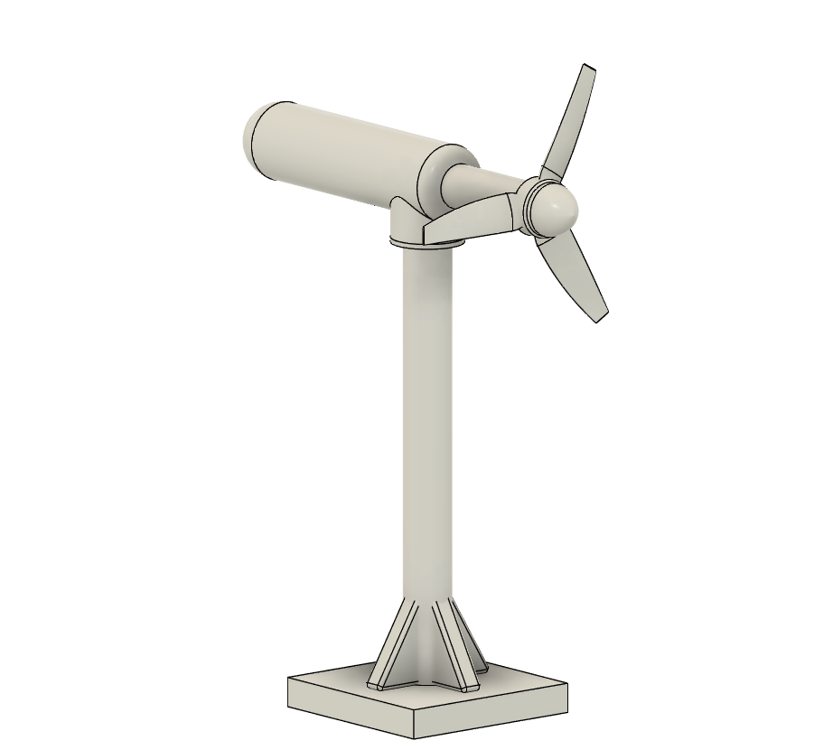
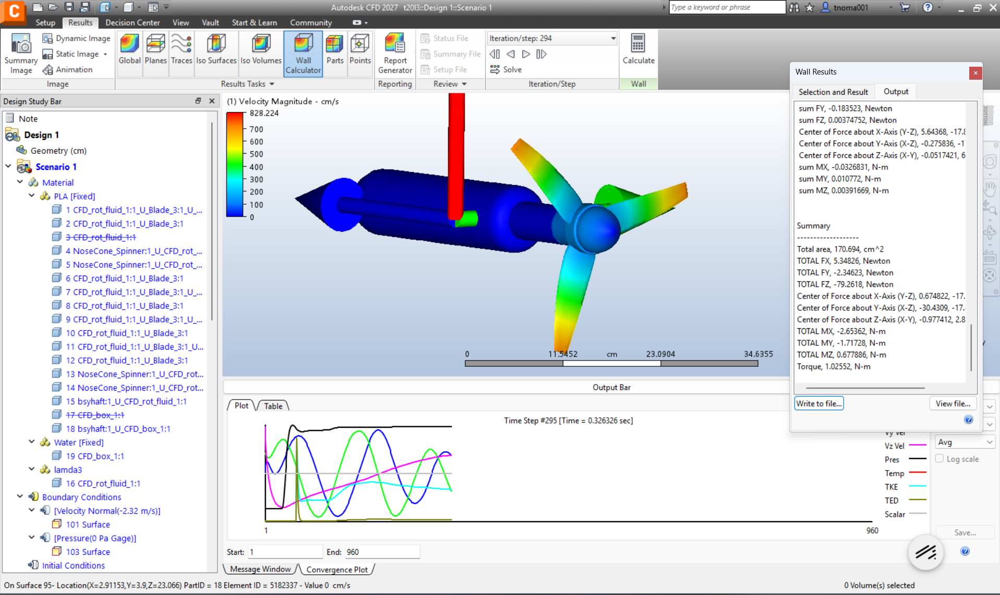
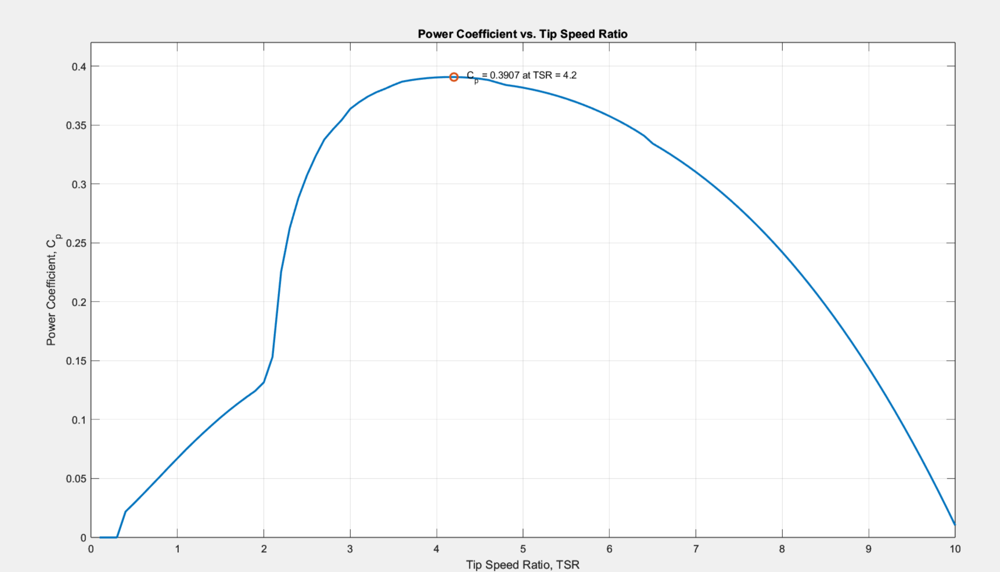
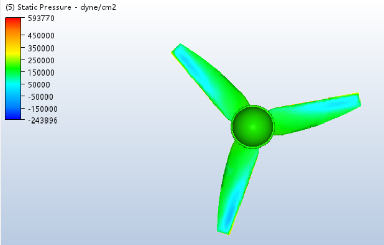
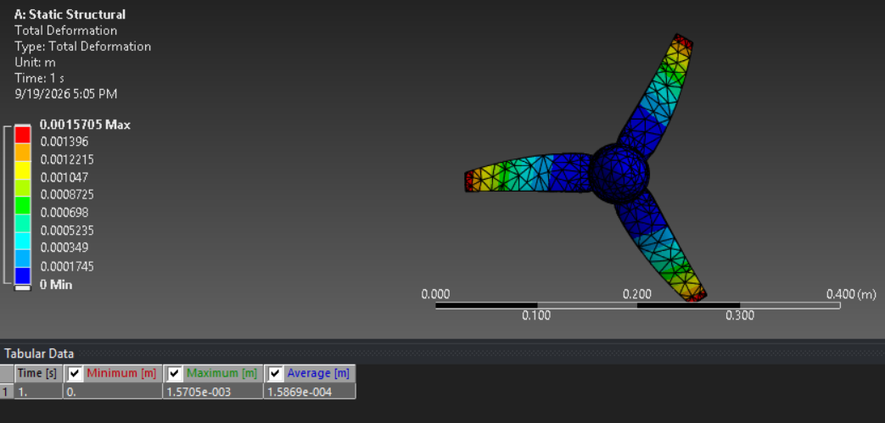
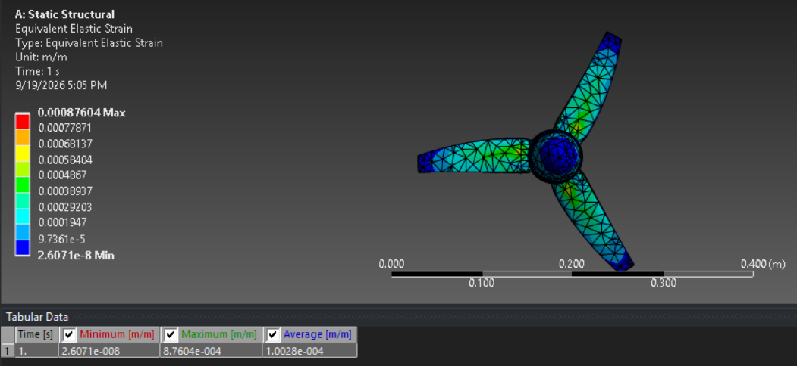
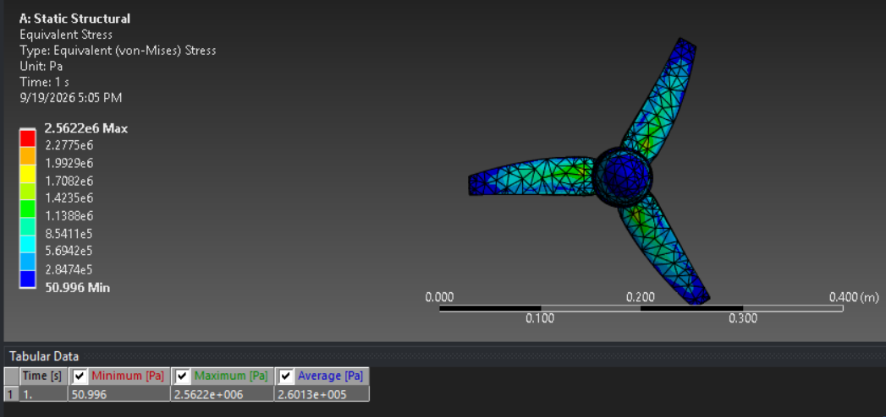

Fluid Dynamics / Controls / Fusion 360
Tidal Turbine
Design of a model-scale marine hydrokinetic tidal turbine for the Gulf Stream: CAD, CFD hydrodynamic characterization, and a first-pass structural and cavitation analysis in Ansys Mechanical.

Project Motivation and Objective
This project is the independent, end-to-end development of a model-scale marine hydrokinetic (MHK) tidal turbine, designed against real-world inflow conditions from the Gulf Stream off Cape Hatteras, NC. Design includes hydrodynamic shape design, CFD performance characterization, structural analysis. The goals were to design a 3-bladed, lift-based rotor sized for the Gulf Stream's current conditions; characterize its hydrodynamic performance across a range of operating points (a Cp-vs-tip-speed-ratio sweep) to identify optimal operating RPM; and use that characterization to drive both a structural load case for FEA.
Design Basis
- Scale: model-scale CFD geometry, rotor radius R = 147 mm (294 mm diameter); full-scale relationships deliberately deferred to a later phase.
- Rotor: 3-bladed, lift-based, blades patterned at 120° with confirmed equal root radius (~46.57 mm).
- Design inflow: Gulf Stream ADCP data — mean current ~2.32 m/s, peak ~2.57 m/s.
- Prototype material: PLA

CFD: Autodesk CFD 2027
The purpose of the CFD was to find the ideal RPM to maximize power output and find loads for the structural analysis in Ansys. The setup used a sliding mesh where a rotating fluid domain was used around the rotor and a large stationary fluid domain was used for the non rotating parts of the turbine. 5 simulations were run for tip speed ratio (TSR) values 3 through 7, where the fluid domain was spun at rpms 452.1, 602.86, 753.5, 904.3, and 1055.0. These rpms were determined with the formula RPM = (λ × V∞ ) / ( R)*(60/2π), where lambda is TSR, velocity is 2.32m/s, and R is the turbine blade length at 14.7 cm. The boundary conditions used the front wall at 2.32 m/s flow and a back wall of 0 Pa pressure. The water density used was 1025 kg/m3. I ran these simulations until results converged within 2% of the previous revolution. At every TSR, the torque, thrust load, and minimum static pressure was recorded. Using MATLAB, the power coefficient was calculated using the formula Cp=T*ω/(1/2*ρ*A*U^3) and was plotted with TSR. The optimal TSR was found to be 4.2 with a RPM of 632.9. At this TSR, the torque was 1.9 N/m, thrust load was 119.2 N, and minimum static gauge pressure was −24.4 kPa.

Cavitation and Structural Analysis
Cavitation
I tested for Cavitation by comparing the minimum absolute local static pressure on the blade against water's absolute vapor pressure of 7.38 kPa at 40 Celsius. Minimum absolute static pressure was 76.9 kPa (−24.4 kPa in gauge pressure). This value is well below cavitation.

Structural Analysis FEA: Ansys Mechanical (Static Structural)
Plastic PLA was used with its default properties from the library. The setup of the simulation included a fixed support at the blade root, a rotational velocity for centrifugal loading, a thrust force of 119.2 and a moment of 1.92 N/m on the blade, both load values from the CFD analysis. The results of the analysis are shown in these images:



Next steps. Test for fatigue and bending stress. 3D print components, find an appropriate motor and construct a full prototype. Test the physical design in a wind tunnel.